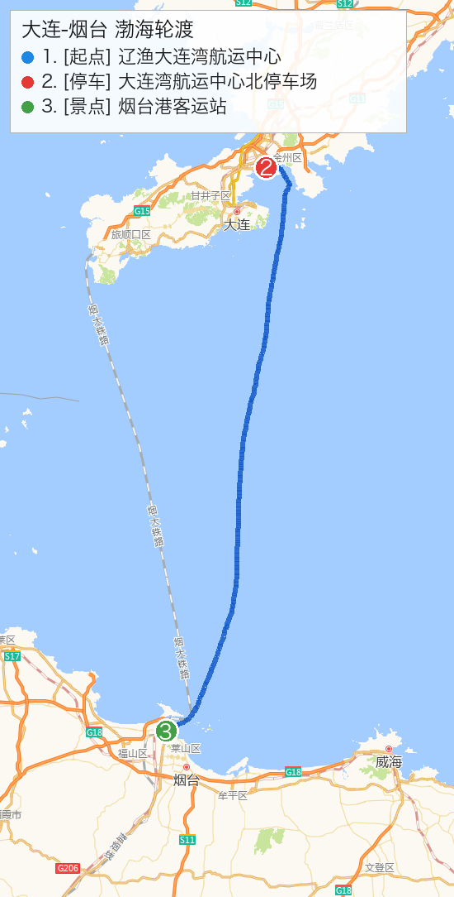
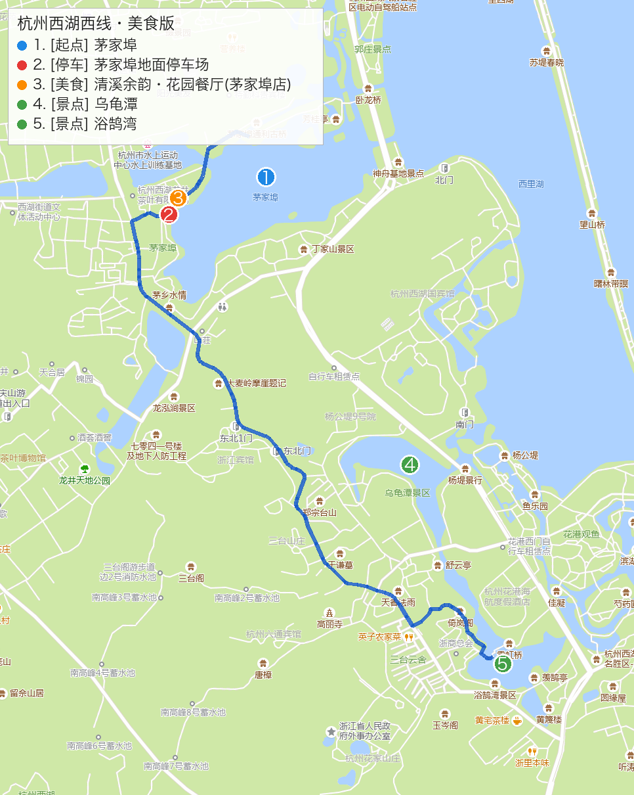

辽渔大连湾航运中心
无宠物信息甘井子区大连湾街，导航"辽渔大连航运中心"；车辆登船口在右侧，11点15分前到
宠物判定只来自大众点评店铺标签，不做任何推测；没标注的一律标「待确认」并附上电话，出发前打一个最稳。


☎ 1 处待确认可带宠物待确认未标注（默认）
共 8 个地点
甘井子区大连湾街，导航"辽渔大连航运中心"；车辆登船口在右侧，11点15分前到
中远路新港客运站｜距「辽渔大连湾航运中心」约29米（高德 POI 实搜）｜另有：大连湾航运中心南停车场(74米)、停车场(辽渔医院西南)(97米)、辽渔医院停车场(134米)｜距「辽渔大连湾航运中心」约0.0 km
芝罘区环海路2号，下船点，19点55分抵达
杨公堤西侧，湖边步道起点，早上人少
（高德搜「茅家埠地面停车场」）已封闭不能露营；评论区作者确认停车不受影响｜距「清溪余韵·花园餐厅(茅家埠店)」约0.1 km
（高德搜「清溪余韵·花园餐厅(茅家埠店)」）茅家埠下茅家埠12号 ☎0571-87969617（点评未标可带宠物，需先电话确认）
水杉倒影，清晨最佳
长廊倒影收尾